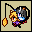
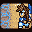
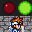
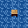
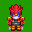
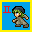

初めての方へ
このサイトは2ちゃんねる ニュース速報VIP板 RPGツクールスレッド(VIPツクスレ)に関するコンテンツを取り扱ったサイトです。 同所の性質上、当サイト内においても内輪・アングラ・不健全要素を含んでいます。
VIPツクスレに初めて訪れる方、書いてあることが良く分からない方は、 閲覧を差し控えるか、半年ほどROMしていただくことを推奨致します。
企画概要
「VIPRPG紅白2013」は、VIPツクスレで毎年開催されている ツクール作品を公開しあい、感想を付け合うことを目的とした企画です。
詳しくはリンクから過去の祭りをご覧ください。
投票審査
作品公開後、人気投票を行います。
各作品ごとに投票ページを設置し、集計結果に基づいて総合順位を決めます。
≫投票要綱
≫投票サンプルページ
スケジュール
| エントリー受付 | |
|---|---|
| 作品提出 | 以降の提出は遅刻扱い 遅刻提出は最終更新まで |
| 作品公開 | |
| 最終更新日 | 2014年1月31日予定 |
| 投票期間 | |
| 開票 |
参加
参加要綱と参加条件をよく読み、内容に了承した上で、必要事項を記入してメールでエントリーしてください。
≫参加要綱
参加条件
- RPGツクールで作られた自分の作品であること
プログラムやWOLF RPGエディターなどで製作されたゲームは参加禁止
ただし、RPGツクールに関係したツール作品のエントリーは自己責任で可 - エントリーは1人1枠 かつ 提出する作品も1人1つまで
1つのzipファイルの中に複数のゲームファイルを封入するのは自己責任で可 - 未公開作品のみ
すでに公開済みである自作品のリメイク品 または
未公開の追加要素・変更要素を含む自作品での参加も自己責任で可
ただしエントリー後、作品公開日までに未公開部分を公開するのは禁止
提出
提出受付開始後、作品をzip形式で圧縮し、以下の方法で提出してください。
≫提出方法
修正
作品提出後、作品を修正する場合は、以下の方法で修正ファイルをアップしてください。
≫修正方法
≫修正アップローダ
① /
② /
③ /
④ /
⑤
BBS
≫掲示板
運営スレ サイトの管理運営のための掲示板です。管理人からのお知らせなどを書き込みます。質問や報告などもこちらへどうぞ。
感想スレ 各作品の専用スレッドがあります。作品の感想を書き込む、攻略・ゲームデータ修正の報告などにご利用ください。
当サイトへのリンク
当サイトはリンクフリーです。作品ページだけ抜き出してリンクしていただいても構いません。以下のバナーをご自由にご利用ください。バナーは直リンクも可能です。
200x40 頂きもの
200x40

部門別
単純評価 ：
熱中 |
技術 |
物語 |
演出 |
斬新さ |
遊びやすさ |
ワロさ |
ひどさ
相関評価 ：
熱中 |
技術 |
物語 |
演出 |
斬新さ |
遊びやすさ |
ワロさ |
ひどさ
斬新さ部門（相関評価）
-
順位 No. 作品タイトル （小計/投票数）
順位点（平均値）
順位点合計点 -
1位 No.72
2000★クッキーのクッキー☆ BBS
結果（223/140）
1位：20pt（1.59）
5位：36pt57.59pt -
2位 No.4
2000★カスタムバトエン -mosimo- BBS
結果（83/54）
2位：20pt（1.54）
8位：34pt55.54pt -
3位 No.8
2000★無双庫番 BBS
結果（28/18）
12位：14pt（1.56）
6位：36pt51.56pt -
4位 No.61
2000★魔王の娘でも分かる心理学 BBS
結果（41/28）
7位：17pt（1.46）
11位：30pt48.46pt -
5位 No.45
2000★西脳 BBS
結果（12/7）
29位：2pt（1.71）
2位：40pt43.71pt -
6位 No.15
2000★闇勇者の過去 BBS
結果（4/2）
46位：0pt（2）
1位：40pt42pt -
7位 No.37
2000★ブームズショウユキャンプ BBS
結果（24/16）
20位：8pt（1.5）
9位：32pt41.5pt -
8位 No.75
2000★カニ爆 BBS
結果（14/9）
27位：3pt（1.56）
6位：36pt40.56pt -
9位 
No.42
2000★もしもアイスⅢが母親だったら BBS
結果（30/21）
11位：15pt（1.43）
14位：24pt40.43pt -
10位 
No.69
2000★図書館探索ゲェム BBS
結果（53/39）
4位：19pt（1.36）
17位：20pt40.36pt -
11位 No.16
VXAce★霊波乃科学 BBS
結果（5/3）
42位：0pt（1.67）
3位：38pt39.67pt -
12位 No.64
2000★Angel゜Hal0 BBS
結果（8/5）
37位：0pt（1.6）
4位：38pt39.6pt -
13位 No.12
2003★Re:Birthible BBS
結果（26/18）
17位：10pt（1.44）
12位：28pt39.44pt -
14位 No.56
2000★超日本列島とらべる絵草紙 BBS
結果（27/19）
13位：13pt（1.42）
15位：24pt38.42pt -
15位 No.6
2000★アリスの標本箱 BBS
結果（69/56）
3位：19pt（1.23）
20位：16pt36.23pt -
16位 No.51
2000★イクゾーダス BBS
結果（33/26）
10位：15pt（1.27）
18位：18pt34.27pt -
17位 No.38
2000★オクデッド BBS
結果（6/4）
41位：0pt（1.5）
9位：32pt33.5pt -
18位 
No.70
2000★核にゃんの魔法牧場 BBS
結果（13/9）
28位：2pt（1.44）
12位：28pt31.44pt -
19位 
No.65
2000★釣りックス BBS
結果（27/22）
13位：13pt（1.23）
21位：14pt28.23pt -
20位 No.36
2000★ゴメスのあなから BBS
結果（15/11）
26位：4pt（1.36）
16位：22pt27.36pt -
21位 No.48
2000★年末謝罪大戦 BBS
結果（48/47）
5位：18pt（1.02）
29位：4pt23.02pt -
22位 No.26
2000★VIPRPG OP BBS
結果（23/19）
21位：7pt（1.21）
22位：12pt20.21pt -
23位 No.40
2000★キュア・プラムス BBS
結果（10/8）
34位：0pt（1.25）
19位：18pt19.25pt -
24位 No.28
2000★逆転ザック BBS
結果（46/49）
6位：18pt（0.94）
36位：0pt18.94pt -
25位 No.49
2000★又吉議員物語 BBS
結果（21/18）
24位：5pt（1.17）
23位：12pt18.17pt -
26位 No.18
2000★Memory of Moshimo BBS
結果（37/38）
8位：17pt（0.97）
34位：0pt17.97pt -
27位 No.68
2000★AleBr BBS
結果（35/38）
9位：16pt（0.92）
37位：0pt16.92pt -
28位 
No.3
2000★RPGツクール the run BBS
結果（25/23）
18位：9pt（1.09）
27位：6pt16.09pt -
29位 No.13
2000★ドラ子かわいい BBS
結果（25/24）
18位：9pt（1.04）
28位：4pt14.04pt -
30位 
No.5
2000★ヴァンパイアⅡ -DOMINION- BBS
結果（27/28）
13位：13pt（0.96）
35位：0pt13.96pt -
31位 No.47
2000★ルインシーカー -寂しがりやのカタコンベ- BBS
結果（27/30）
13位：13pt（0.9）
38位：0pt13.9pt -
32位 
No.27
2000★紅白踏み台合戦 BBS
結果（11/10）
31位：0pt（1.1）
24位：10pt11.1pt -
32位 No.25
2000★もしもの宇宙戦争 BBS
結果（11/10）
31位：0pt（1.1）
24位：10pt11.1pt -
34位 No.52
2000★同じ色の物体が４つほどくっつくと消えるバグを搭載したゲーム BBS
結果（12/11）
29位：2pt（1.09）
26位：8pt11.09pt -
35位 No.55
2000★娘様のジャンプアクション BBS
結果（22/22）
23位：6pt（1）
30位：2pt9pt -
36位 No.24
2000★わてり☆初体験 BBS
結果（23/27）
21位：7pt（0.85）
39位：0pt7.85pt -
37位 No.66
2000★フレイミングリターンズ（旧題：炎の他宅警備員） BBS
結果（17/22）
25位：4pt（0.77）
42位：0pt4.77pt -
38位 No.62
2000★あんこくのみらいで BBS
結果（4/4）
46位：0pt（1）
30位：2pt3pt -
38位 No.29
2000★ミリィのドタバタな日常 BBS
結果（7/7）
38位：0pt（1）
30位：2pt3pt -
38位 
No.23
2000★もしも新キャララッシュだったら BBS
結果（5/5）
42位：0pt（1）
30位：2pt3pt -
41位 No.57
2000★もしも全自作音楽でダークアーディス掌編だったら BBS
結果（5/6）
42位：0pt（0.83）
40位：0pt0.83pt -
42位 No.59
2000★闇Ⅰハロウィン BBS
結果（4/5）
46位：0pt（0.8）
41位：0pt0.8pt -
43位 No.53
2000★2013年新キャラ総決算 BBS
結果（7/10）
38位：0pt（0.7）
43位：0pt0.7pt -
44位 No.58
2000★ksg流しそうめん BBS
結果（9/13）
36位：0pt（0.69）
44位：0pt0.69pt -
45位 
No.33
2000★デス蜜柑 非表示
非表示（10/15）
34位：0pt（0.67）
45位：0pt0.67pt -
46位 No.34
2000★包丁とデュラハン BBS
結果（5/10）
42位：0pt（0.5）
46位：0pt0.5pt -
46位 No.54
VX★セイブ・ザ・ロード BBS
結果（2/4）
51位：0pt（0.5）
46位：0pt0.5pt -
46位 No.73
2000★俺がtkったアクションホコグラ素材集2013～年末年始やらないか大バーゲン～ BBS
結果（2/4）
51位：0pt（0.5）
46位：0pt0.5pt -
46位 
No.22
2000★R-Ⅱ The batter BBS
結果（4/8）
46位：0pt（0.5）
46位：0pt0.5pt -
46位 
No.35
XP★北の宿から。 BBS
結果（1/2）
54位：0pt（0.5）
46位：0pt0.5pt -
51位 No.43
2000★もしも死神五世と・・・ BBS
結果（11/26）
31位：0pt（0.42）
51位：0pt0.42pt -
52位 No.32
2000★なすーんが脱出するみたいなもの BBS
結果（7/18）
38位：0pt（0.39）
52位：0pt0.39pt -
53位 No.46
2000★もしも時を越えて（disk2 BBS
結果（1/3）
54位：0pt（0.33）
53位：0pt0.33pt -
54位 No.44
2000★玉露日記 BBS
結果（3/12）
50位：0pt（0.25）
54位：0pt0.25pt -
55位 No.41
2000★偽エルと水産のラブラブデート BBS
結果（2/9）
51位：0pt（0.22）
55位：0pt0.22pt -
56位 No.14
2000★もしもサバイバーズ BBS
結果（0/2）
56位：0pt（0）
56位：0pt0pt